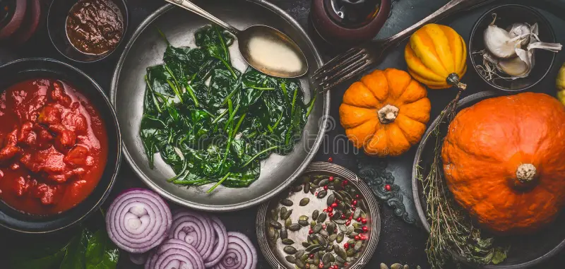

Odin Recipes is a community-driven platform where food enthusiasts can share and discover recipes from around the world.
Our mission is to inspire home cooks and food lovers by providing a wide variety of recipes that are easy to follow and delicious to eat.
Whether you are looking for quick weeknight dinners, healthy meal options, or indulgent desserts, we have something for everyone.
Join our community and start exploring the world of cooking with Odin Recipes!
We envision a world where cooking is accessible to everyone, regardless of skill level or background.
We believe that cooking should be fun, creative, and rewarding, and we strive to make that a reality through our platform.
If you would like to contribute recipes, share cooking tips, or simply connect with other food lovers, we would love to hear from you!
Feel free to reach out to us through our contact page or follow us on social media for the latest updates and recipes.
